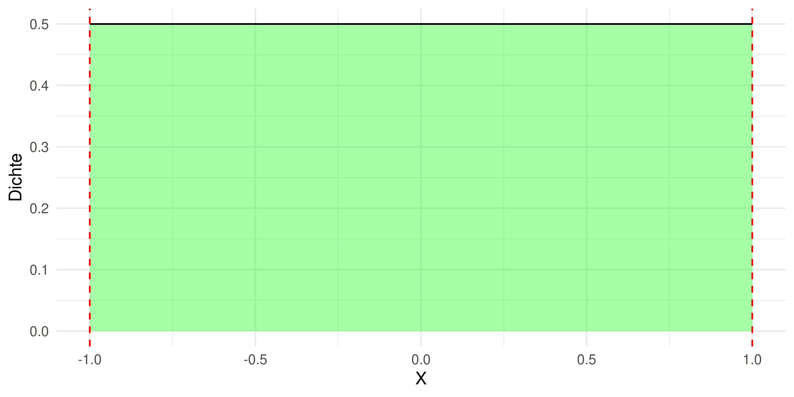
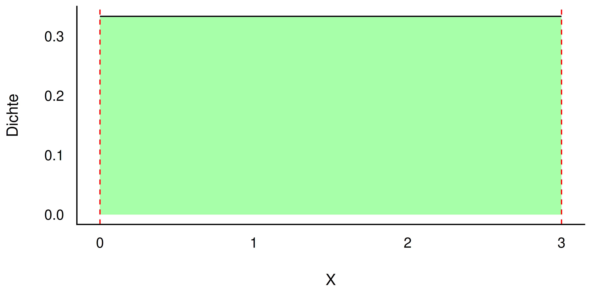
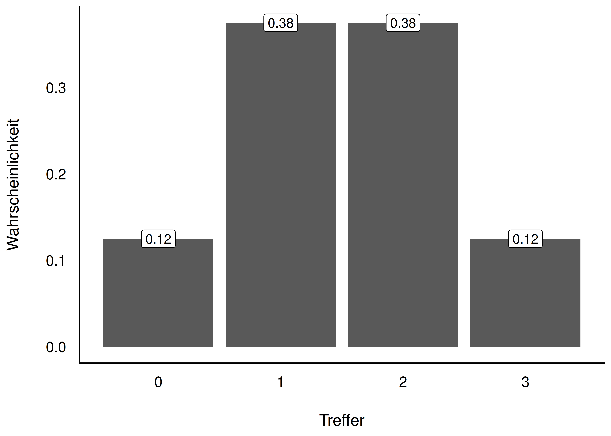
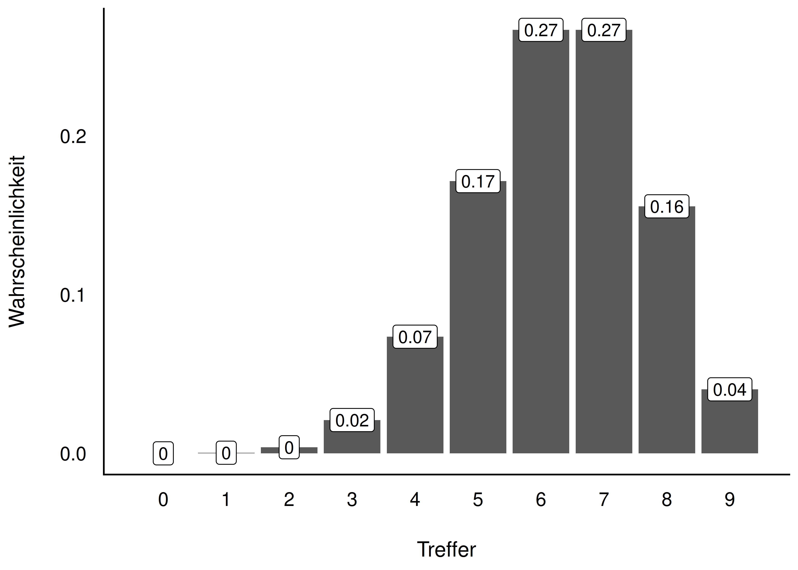

Start:Bayes!
Verteilungen
Lernziele
Nach diesem Kapitel können Sie …
- den Begriff der Zufallsvariablen erläutern
- Wahrscheinlichkeitsdichte und Verteilungsfunktion erläutern
- die Gleichverteilung erläutern
- die Binomialverteilung erläutern
- die halbe Normalverteilung erläutern
- die Exponentialverteilung erläutern
- zentrale Konzepte in R umsetzen
Zentrale Begriffe
Zufallsvariable (random variable)
- diskret vs. stetig
- Wahrscheinlichkeitsdichte: \(f\), (probability) density
- Wahrscheinlichkeitsfunktion: kumulierte Wahrscheinlichkeit, Wahrscheinlichkeitsmasse
Wichtige Verteilungen: Gleichverteilung, Normalverteilung, Standardnormalverteilung
Wichtige Verteilungen
Wichtige Verteilungen — Überblick
In diesem Kapitel lernen wir vier zentrale Verteilungen kennen:
- Gleichverteilung — Indifferenz, alles gleich wahrscheinlich
- Binomialverteilung — Anzahl Treffer bei \(n\) Wiederholungen
- Halbe Normalverteilung — nur positive Werte
- Exponentialverteilung — Alternative zur halben NV
Wichtige Verteilungen
Gleichverteilung
Gleichverteilung — Indifferenz als Grundlage
- Jede Ausprägung der Zufallsvariablen ist gleichwahrscheinlich
- Passend, wenn kein Grund besteht, eine Ausprägung für plausibler zu halten als eine andere
- Gibt es diskret und stetig
Definierendes Kennzeichen: die konstante Dichte
Gleichverteilung
Gleichverteilung — Beispiel


- links: min = -1, max = 1, Dichte \(=1/2\) — bei \(X=0\) hat eine Einheit (-1 bis 0) 50 % Wahrscheinlichkeitsmasse
- rechts: min = 0, max = 3, Dichte \(=1/3\) — jede Einheit hat ca. 33 % Wahrscheinlichkeitsmasse
Gleichverteilung
Binomialverteilung
Definition: Binomialverteilung
Definition: Binomialverteilung
Stellt die Wahrscheinlichkeit der Ergebnisse eines \(n\)-fach wiederholten binomialen Zufallsexperiments dar (zwei Elementarereignisse).
- interessiert: nur die Anzahl der \(k\) Treffer, nicht die Reihenfolge
- Trefferwahrscheinlichkeit \(p\) bleibt über alle Wiederholungen gleich (Ziehen mit Zurücklegen)
- Ergebnisse sind unabhängig voneinander (iid)
Binomialverteilung
Notation
\[\overbrace{X}^{\text{Zufallsvariable}} \underbrace{\sim}_{\text{ist verteilt nach}} \underbrace{\overbrace{\text{Bin}(n, p)}^{\text{Binomialverteilung}}}_{\text{mit Parametern } n, p}\]
\[X \sim \text{Bin}(n, k)\]
Anwendungsbeispiele: defekte Schrauben, Wirkung eines Medikaments, Zustimmung in einer Umfrage, Würfelwürfe, faire/unfaire Münze
Binomialverteilung
Beispiel: Das Loskästchen
{kind=link}
- Kästchen mit sehr vielen Losen: 2/5 Treffer (T), 3/5 Nieten (N)
- Ziehen mit Zurücklegen — Trefferwahrscheinlichkeit ändert sich praktisch nicht
- Frage: Wie wahrscheinlich sind bei 3 Zügen genau 2 Treffer?
Binomialverteilung
Möglichkeiten zählen: 3 Lose, 2 Treffer
{kind=link}
| Pfad | Treffer | Wahrscheinlichkeit |
|---|---|---|
| TTT | 3 | \(p^3 \approx 0.064\) |
| TTN, TNT, NTT | 2 | \(p^2 q \approx 0.096\) (je) |
| TNN, NTN, NNT | 1 | \(p q^2 \approx 0.144\) (je) |
| NNN | 0 | \(q^3 \approx 0.216\) |
Binomialverteilung
Anzahl Pfade mal Pfad-Wahrscheinlichkeit
- Wahrscheinlichkeit eines günstigen Pfades: \(Pr(A) = p^2 \cdot q^1 = \left(\tfrac{2}{5}\right)^2 \cdot \left(\tfrac{3}{5}\right)^1 \approx 0.096\)
- 3 günstige Pfade ohne Beachtung der Reihenfolge: TTN, TNT, NTT
\[Pr(A') = k \cdot Pr(A) = 3 \cdot 0.096 = 0.29\]
Die Wahrscheinlichkeit, bei 3 Zügen 2 Treffer zu erzielen, beträgt ca. 29 %.
Binomialverteilung
Formel der Binomialverteilung
Theorem: Binomialverteilung
\[Pr(X=k|p,n) = \frac{n!}{k!(n-k)!}p^k(1-p)^{n-k}\]
\[Pr(X=k|p,n) = \underbrace{\binom{n}{k}}_{\text{Anzahl Pfade}} \cdot \underbrace{p^k(1-p)^{n-k}}_{\text{Pfad-Wahrscheinlichkeit}}\]
Übersetzung: Wahrscheinlichkeit = Anzahl der günstigen Pfade mal Wahrscheinlichkeit eines günstigen Pfades.
Binomialverteilung
Definition: Binomialkoeffizient
Definition: Binomialkoeffizient
Gibt an, auf wie vielen verschiedenen Arten man aus \(n\) Objekten \(k\) Objekte ziehen kann (ohne Zurücklegen, ohne Beachtung der Reihenfolge).
\[\binom{n}{k}= \frac{n!}{k!\cdot (n-k)!}\]
Lies: “Wähle aus \(n\) möglichen Ereignissen \(k\) günstige Ereignisse” — “k aus n” bzw. “n über k”
Binomialverteilung
Fakultät
Man multipliziert alle natürlichen Zahlen von der gegebenen Zahl bis 1 herunter.
- \(1! = 1\)
- \(3! = 3 \cdot 2 \cdot 1 = 6\)
- \(4! = 4 \cdot 3 \cdot 2 \cdot 1 = 24\)
- \(0! = 1\) (per Definition)
In R: factorial() für die Fakultät, choose() für den Binomialkoeffizienten
Binomialverteilung
Beispiel: 2 von 4 Freunden auswählen
- 2 freie Plätze im Auto, 4 Freunde wollen mitfahren
- Alle 4 wählen: \(4! = 24\) Möglichkeiten
- Nur 2 von 4 (Reihenfolge zählt): \(\frac{4!}{2!} = 12\)
- Reihenfolge egal (“AB” = “BA”): durch \(2!\) teilen
\[\binom{4}{2} = \frac{4!}{2! \cdot 2!} = 6\]
6 mögliche Mitfahrer-Kombinationen: AB, AC, AD, BC, BD, CD
Binomialverteilung
Weitere Beispiele: Binomialkoeffizient
Lotto (6 aus 49):
\[\binom{49}{6}= 13\,983\,816 \text{ Zahlenkombinationen}\]
Beförderung (11 aus 25 Personen):
\[\binom{25}{11} = \frac{25!}{11!\cdot(25-11)!} = 4\,457\,400 \text{ Kombinationen}\]
Binomialverteilung
Rechnen mit der Binomialverteilung in R
dbinom(x, size, prob)— Wahrscheinlichkeitsdichte/-funktion: \(Pr(X = x)\)pbinom(q, size, prob)— Verteilungsfunktion (kumuliert): \(Pr(X \le q)\)choose(n, k)— Binomialkoeffizientfactorial(n)— Fakultät
Beispiel: dbinom(x = 2, size = 3, prob = 2/5) — Wahrscheinlichkeit für 2 Treffer bei 3 Zügen, \(p = 2/5\)
Binomialverteilung
Beispiel: Klausur mit 20 Richtig-Falsch-Fragen
Wie wahrscheinlich ist es, durch bloßes Raten genau 15 von 20 Fragen richtig zu haben?
Wie wahrscheinlich sind höchstens 15 Treffer?
Binomialverteilung
Beispiel: Münzwürfe mit der Binomialverteilung


- 3 Münzwürfe, genau 3× Kopf: \(Pr(X=3) = (1/2)^3 = 0.125\)
- Ist die Binomialverteilung symmetrisch? Ändert sich die Wahrscheinlichkeit linear?
Binomialverteilung
Beispiel: Pumpstation
- 7 Motoren, je 5 % Ausfallwahrscheinlichkeit pro Tag
- Betrieb läuft weiter, solange mindestens 5 Motoren arbeiten
- Frage: Wie hoch ist die Wahrscheinlichkeit eines Ausfalls?
{kind=link}
Binomialverteilung
Pumpstation — Rechnung
\[Pr(X\ge 5) = Pr(X=5) + Pr(X=6) + Pr(X=7) \approx 0.996\]
Komplementäres Ereignis (Ausfall, höchstens 4 Motoren):
\[Pr(\bar{X}) = 1 - Pr(X) \approx 0.004\]
Die Wahrscheinlichkeit eines Ausfalls liegt bei ca. 0,4 %. Alternativ direkt: pbinom(q = 4, size = 7, prob = .95)
Binomialverteilung
Halbe Normalverteilung
Die halbe Normalverteilung
{kind=link}
Definition: Halbe Normalverteilung
Ignoriert man die (negativen) Vorzeichen der Normalverteilungswerte, erhält man die halbe Normalverteilung. Man “spiegelt” die negative Seite auf die positive.
- verwendbar, wenn normalverteilte Werte \(> 0\) sein müssen
- zwei Parameter: Mittelwert und SD, analog zur Normalverteilung
Halbe Normalverteilung
Beispiele: Halbe Normalverteilung
- Entfernung eines Dart-Pfeils zur Mitte der Zielscheibe
- Entfernung des vom Baum gefallenen Apfels zum Stamm
- Abweichung des Gewichts eines Produkts vom Soll-Gewicht
- Reaktionszeiten einer Versuchsperson
Halbe Normalverteilung
Exponentialverteilung
Die Exponentialverteilung
- Alternative zur halben Normalverteilung
- Ähnlicher Verlauf, aber: Extremwerte sind wahrscheinlicher
- Vorteilhaft, wenn die Skalierung eines Phänomens unklar ist
\[X \sim \operatorname{Exp}(1)\]
Exponentialverteilung
Exponentialverteilung vs. halbe Normalverteilung
{kind=link}
Die Normalverteilung setzt der Streuung engere Grenzen als die Exponentialverteilung.
Exponentialverteilung
Eigenschaften der Exponentialverteilung
- nur für positive Werte \(x > 0\) definiert
- steigt \(X\) um eine Einheit, ändert sich \(Y\) um einen konstanten Faktor
- ein Parameter: Rate \(\lambda\) (“lambda”)
- \(\frac{1}{\lambda}\) gibt gleichzeitig Mittelwert und Streuung an
- größeres \(\lambda\) → schnellerer “Verfall”, kleinere Streuung/Mittelwert (und umgekehrt)
Exponentialverteilung
Verschiedene Exponentialverteilungen
{kind=link}
- Unterschiede zwischen Exponentialverteilungen kommen nur durch \(\lambda\) zustande
- in R:
qexp(p, rate)für Quantile,pexp()für die Verteilungsfunktion
- B.
qexp(p = .5, rate = 1/8)≈ 5,5 — der Median dieser Verteilung
Exponentialverteilung
Verteilung wählen: ein Merksatz
Hinweis
Eine “gut passende” oder gar “richtige” Verteilung zu finden, ist nicht immer einfach. Im Zweifel lieber eine liberalere Verteilung wählen, die einen breiteren Raum an möglichen Werten zulässt — aber Extremwerte, die unrealistisch sind, sollte man trotzdem ausschließen.
Exponentialverteilung
Zusammenfassung
- Gleichverteilung: alle Ausprägungen gleich wahrscheinlich, konstante Dichte
- Binomialverteilung: \(Pr(X=k|p,n) = \binom{n}{k}p^k(1-p)^{n-k}\) — Anzahl Treffer bei \(n\) Wiederholungen
- Halbe Normalverteilung: nur positive Werte, gespiegelte Normalverteilung
- Exponentialverteilung: Alternative zur halben NV, ein Parameter \(\lambda\), extremere Werte möglich
Exponentialverteilung
Vielen Dank!
Fragen?
Exponentialverteilung

Start:Bayes! — Verteilungen